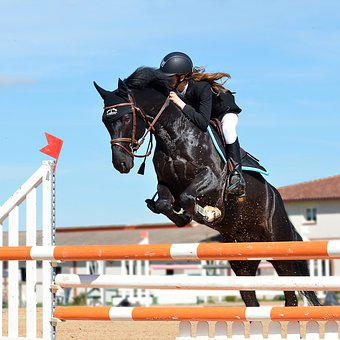
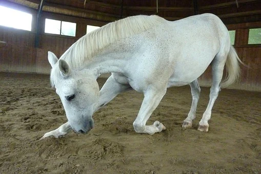
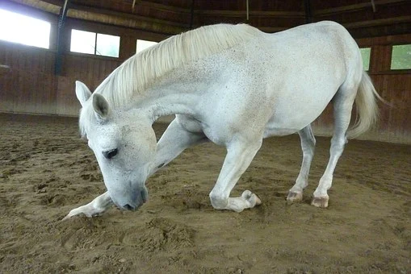

Showjumping
Showjumping is one of the most common practices within the equestrian community, where the rider and horse focus on getting over a series of hurdles within a set amount of time. The scoring comes from adding points for every bar that is felled, as well as every second that the team (horse and rider) is overdue the set time given. Just as in golf, the fewer points that are racked up the higher ranked the team will be. Showjumping is both a teamsport (teams for riders and horses) and a solo sport and is a part of the olympics!
Dressage
Dressage, like showjumping, is also one of the most common interests within the equestrian community. A key difference however is the lack of hurdles in this practice, as it focuses more on the gait and "elegance" of the horse's and rider's teamwork. Dressage is also not graded by the amount of points accumulated, but rather the percentage of how close to perfect the teams are. Many of the horses movements such as, piaff, is not seen in the wild or other practices often, if at all. Like showjumping, so does dressage exist as both a team oriented sport, as well as solo.


Groundwork
Groundwork is the last fo the three big interests, but also vital nonetheless! It is a very important part of bonding with your horse, as it is conducted from the ground rather from the saddle. This practice consists of many different ways to work with your horse, such as lunging and trick training.
- Lunging is a way to work your horse on a long extended line, a very good option for those who do not have any interest in riding themselves, or for the rehabilitaion of their horse.
- Tricks are an awesome way to build a good relationship with your horse, it also gives great mental stimulation! By working with positive learning you build a good and trusting relationship with your horse, often leading to a will to work with you both under a saddle and on the ground.
 
